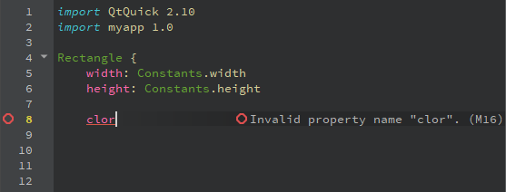

Checking Code Syntax
As you write code, Qt Creator checks code syntax. When Qt Creator spots a syntax error in your code it underlines it and shows error details when you move the mouse pointer over the error. Similarly, when you are working on an instance of a JavaScript object notation (JSON) entity, Qt Creator underlines errors in JSON data structure.
In the following screenshot, Qt Creator points out an error, because a semicolon is missing at the end of the line:
In the following screenshot, Qt Creator issues a warning, because the variable is not used:

To modify the colors used for underlining errors and warnings, select Tools > Options > Text Editor > Fonts & Colors > Copy, and select new colors for Error and Warning.
Viewing Annotations
When using the Clang code model, errors and warnings are additionally marked with icons and annotated. If a Clang fix-it is available, you can execute it by clicking the  icon and pressing Enter.
icon and pressing Enter.
In the following screenshot, a Qt class name contains a typo:

You can use the icons in the tooltip popup to copy the error or warning message to the clipboard or to ignore and hide it. Select the Annotation Settings link to specify the position of the line annotations.
In the following screenshot, a semicolon is missing at the end of the line.

In the following screenshot, the variable is not used.

When writing QML or JavaScript code, the annotations may contain error codes listed in JavaScript and QML Error Codes.

Specifying Line Annotation Positions
To specify the position where the annotations are displayed, select Tools > Options > Text Editor > Display > Line annotations, and then select whether to display the annotations directly next to the code, aligned to the right of the code, or in the right margin. Showing annotations between lines can be useful if there is usually not enough space to display annotations next to the text.
If you hide the annotations by deselecting the check box, you can move the mouse pointer over an icon to view them.
JavaScript and QML Error Codes
You can run static checks on the QML and JavaScript code in your project to find common problems. To run the checks, select Tools > QML/JS > Run Checks or press Ctrl+Shift+C. The results are shown in the QML and QML Analysis filters of the Issues output pane.
Many of the error messages are similar to the ones in Douglas Crockford's JSLint tool. For more information about JSLint errors, see JSLint Error Explanations.
| Id | Severity | Message | Description |
|---|---|---|---|
| M1 | Error | Invalid value for enum | |
| M2 | Error | Enum value must be a string or a number | |
| M3 | Error | Number value expected | |
| M4 | Error | Boolean value expected | |
| M5 | Error | String value expected | |
| M6 | Error | Invalid URL | |
| M7 | Warning | File or directory does not exist | |
| M8 | Error | Invalid color | |
| M9 | Error | Anchor line expected | |
| M10 | Error | Duplicate property binding | See also: Duplicate key '{a}'. |
| M11 | Error | Id expected | See also: Expected an identifier and instead saw '{a}' (a reserved word). |
| M14 | Error | Invalid id | See also: Expected an identifier and instead saw '{a}' (a reserved word). |
| M15 | Error | Duplicate id | Ids in a file must be unique. See also: Duplicate key '{a}'. |
| M16 | Error | Invalid property name name | |
| M17 | Error | Name does not have members | |
| M18 | Error | Field is not a member of object | |
| M19 | Warning | Assignment in condition | It could be a typing error. If it is intentional, wrap the assignment in parentheses. |
| M20 | Warning | Unterminated non-empty case block | Case blocks should either be empty or end in a flow control statement such as break, return or continue. Alternatively you can indicate intentional fall through by ending with a // fall through comment. |
| M23 | Warning | Do not use eval | See also: eval is evil. |
| M28 | Warning | Unreachable | Indicates that the underlined statement will never be executed. |
| M29 | Warning | Do not use with | See also: Unexpected 'with'. |
| M30 | Warning | Do not use comma expressions | |
| M31 | Warning | Unnecessary message suppression | |
| M103 | Warning | Name is already a formal parameter | |
| M104 | Warning | Name is already a function | |
| M105 | Warning | Var name is used before its declaration | |
| M106 | Warning | Name is already a var | |
| M107 | Warning | Name is declared more than once | Variables declared in a function are always visible everywhere in the function, even when declared in nested blocks or for statement conditions. Redeclaring a variable has no effect. |
| M108 | Warning | Function name is used before its declaration | See also: {a} was used before it was defined. |
| M109 | Warning | Do not use Boolean as a constructor | See also: Do not use {a} as a constructor. |
| M110 | Warning | Do not use String as a constructor | See also: Do not use {a} as a constructor. |
| M111 | Warning | Do not use Object as a constructor | See also: Do not use {a} as a constructor. |
| M112 | Warning | Do not use Array as a constructor | See also: Do not use {a} as a constructor. |
| M113 | Warning | Do not use Function as a constructor | See also: Do not use {a} as a constructor. |
| M114 | Hint | The function keyword and the opening parenthesis should be separated by a single space | See also: Expected exactly one space between {a} and {b}. |
| M115 | Warning | Do not use stand-alone blocks | Blocks do not affect variable scoping. Thus blocks that are not associated to if, while, etc. have no effect and should be avoided. |
| M116 | Warning | Do not use void expressions | |
| M117 | Warning | Confusing pluses | See also: Confusing pluses. |
| M119 | Warning | Confusing minuses | See also: Confusing minuses. |
| M121 | Hint | Declare all function vars on a single line | |
| M123 | Hint | Unnecessary parentheses | |
| M126 | Warning | == and != may perform type coercion, use === or !== to avoid it | The non-strict equality comparison is allowed to convert its arguments to a common type. That can lead to unexpected results such as ' \t\r\n' == 0 being true. Use the strict equality operators === and !== and be explicit about conversions you require. |
| M127 | Warning | Expression statements should be assignments, calls or delete expressions only | |
| M128 | Error | A state cannot have the specified child item | |
| M201 | Hint | Place var declarations at the start of a function | See also: Move 'var' declarations to the top of the function. |
| M202 | Hint | Use only one statement per line | |
| M203 | Warning | Imperative code is not supported in the Design mode | |
| M204 | Warning | This QML type is not supported in the Design mode | |
| M205 | Warning | Reference to parent QML type cannot be resolved correctly by the Design mode | |
| M206 | Warning | This visual property binding cannot be evaluated in the local context and might not show up in Design mode as expected | |
| M207 | Warning | Design mode only supports states in the root QML type | |
| M208 | Error | This id might be ambiguous and is not supported in the Design mode. | |
| M209 | Error | This type (type name) is not supported as a root element in the Design mode. | |
| M220 | Error | This type (type name) is not supported as a root element of a Qt Quick UI form. | |
| M221 | Error | This type (type name) is not supported in a Qt Quick UI form. | |
| M222 | Error | Functions are not supported in a Qt Quick UI form. | For a list of supported JavaScript functions, see Supported Methods. |
| M223 | Error | Java Script blocks are not supported in a Qt Quick UI form. | |
| M224 | Error | Behavior type is not supported in a Qt Quick UI form. | |
| M225 | Error | States are only supported in the root item in a Qt Quick UI form. | |
| M226 | Error | Referencing the parent of the root item is not supported in a Qt Quick UI form. | |
| M300 | Error | Unknown component | |
| M301 | Error | Could not resolve the prototype name of object | |
| M302 | Error | Could not resolve the prototype name | |
| M303 | Error | Prototype cycle, the last non-repeated component is name | |
| M304 | Error | Invalid property type name | |
| M305 | Warning | == and != perform type coercion, use === or !== to avoid it | See M126. |
| M306 | Warning | Calls of functions that start with an uppercase letter should use new | By convention, functions that start with an uppercase letter are constructor functions that should only be used with new. |
| M307 | Warning | Use new only with functions that start with an uppercase letter | See also: Do not use {a} as a constructor. |
| M308 | Warning | Do not use Number as a constructor | See also: Do not use {a} as a constructor. |
| M309 | Hint | Use spaces around binary operators | |
| M310 | Warning | Unintentional empty block, use ({}) for empty object literal | |
| M311 | Hint | Use type instead of var or variant to improve performance | |
| M312 | Error | Missing property number | |
| M313 | Error | Object value expected | |
| M314 | Error | Array value expected | |
| M315 | Error | Value value expected | |
| M316 | Error | Maximum number value is number | |
| M317 | Error | Minimum number value is number | |
| M318 | Error | Maximum number value is exclusive | |
| M319 | Error | Minimum number value is exclusive | |
| M320 | Error | String value does not match required pattern | |
| M321 | Error | Minimum string value length is number | |
| M322 | Error | Maximum string value length is number | |
| M323 | Error | Number elements expected in array value | See also: The array literal notation [] is preferable. |
Checking JSON Data Structure
Qt Creator validates instances of JSON entities against A JSON Media Type for Describing the Structure and Meaning of JSON Documents. However, Qt Creator does not understand the entire specification.
A JSON schema defines the structure of JSON data. It determines what JSON data is required for an application and how to interact with it.
The specification does not define how to map JSON instances with JSON schemas. Qt Creator looks for a JSON schema file with a name that matches the name of the JSON instance file in the user configuration folder. For example, ~/config/QtProject/qtcreator/json on Linux and macOS and C:\Users\username\AppData\Roaming\QtCreator\qtcreator\json on Windows. To check JSON data structure, copy the JSON schema file to the above folder.
Resetting the Code Model
If you change the build and run kit when you have QML files open in the code editor, the code model might become corrupt. The following error message indicates that this might have happened: Using Qt Quick 1 code model instead of Qt Quick 2.
You can see the error message when you move the mouse pointer over code that Qt Creator underlines in the code editor or when you open a QML file in the Design mode.
To reset the code model, select Tools > QML/JS > Reset Code Model.
If this does not help, try changing the QML emulation layer to the one that was built with the same Qt version as the one selected in the build and run kit. For more information, see Running QML Modules in Design Mode.
Inspecting QML and JavaScript
To inspect QML and JavaScript properties, methods, and enums, move the cursor over them and select Tools > QML/JS > Inspect API for Element Under Cursor.
Automatically Formatting QML/JS Files
To automatically format QML/JS files upon saving, select Tools > Options > Qt Quick > QML/JS Editing > Enable auto format on file save.